En este capítulo estudiaremos cómo describir conjuntos de datos de forma visual, utilizando varios tipos de gráficos distintos:
Stemplot
Histograma
Diagrama de caja o boxplot
Gráfico de dispersión
Gráfico de series temporales
Veremos la relación visual entre un histograma y un diagrama de caja, y aprenderemos también a construir tablas de frecuencias en Excel y en Python. Finalmente, veremos algunos otros tipos de gráficos que son útiles para aplicaciones concretas, como los gráficos de densidad.
Utilizaremos dos grupos de datos,
- las alturas de un grupo de alumnos y alumnas, recogidos en un fichero CSV denominado `aula1.csv`,
- los datos analíticos de una fabricación de camembert a lo largo de un año, recogidos en un fichero CSV denominado `camembert.csv`
7.1 Explorando los datos
El diagrama de tallo y hojas (stem and leaf plot o stemplot)
El diagrama de tallo y hojas, también conocido como stemplot, es una herramienta gráfica utilizada en estadística para representar la distribución de un conjunto de datos. Es especialmente útil para conjuntos de datos pequeños y proporciona una forma rápida y efectiva de visualizar la forma de los datos y su dispersión. El stemplot recibe este nombre porque el dibujo que resulta se asemeja a un tallo el que le salen las hojas que son los datos individuales.
Los componentes de un stemplot son:
Tallo: Representa el grupo principal de los valores de los datos. Generalmente, se usa la parte más significativa del número. Por ejemplo, en el número 43, el tallo podría ser 4.
Hojas: Representan los dígitos finales o menos significativos de los valores de los datos. Siguiendo el ejemplo anterior, la hoja sería 3.
Construcción del diagrama en la hoja de cálculo
Supongamos que queremos medir la altura de un grupo de alumnos de nuestra clase. Éste es nuestro grupo:
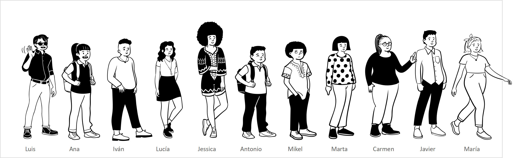
Realizamos la medida de altura de cada persona y registramos los valores en una hoja de cálculo, siguiendo las buenas prácticas que hemos visto al estudiar los datos ordenados.
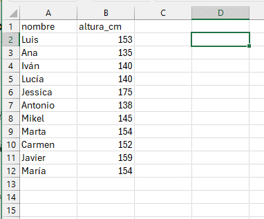
Vamos a utilizar los datos de medidas de altura de nuestro grupo de alumnos. Quitamos el último dígito a la derecha de nuestros valores y colocamos verticalmente los valores resultantes ordenándolos de menor a mayor, y evitando las repeticiones. Para evitar errores en la escala, debemos incluir los valores intermedios aunque no haya ninguno en nuestros datos (en el ejemplo, el valor 16 que correspondería a los 160). Esto forma el “tallo” de nuestro diagrama:
A continuación añadimos las “hojas” en la celda a la derecha, que consisten en los valores que hemos “cortado” de nuestro árbol, uno al lado de otro, incluyendo esta vez los valores repetidos, en orden de menor a mayor. Por ejemplo, para el valor 135, descartamos 13 y utlizamos 5; para el valor 138, descartamos 13 y utilizamos 8, y así sucesivamente para todos los valores.
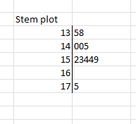
Interpretación del diagrama de tallo y hojas
Tallo: Los números a la izquierda del símbolo | representan los valores base (o tallos), en este caso, las decenas de las alturas.
Hojas: Los números a la derecha del símbolo | representan los dígitos adicionales (o hojas). Por ejemplo, en la línea 13 | 58, el tallo es 13 (130), y las hojas son 5 y 8, que corresponden a los datos 135 y 138.
El diagrama nos dice que los valores en torno a 150 cm son los más frecuentes, y que hay un valor alto (175) que se separa un poco del resto.
Resumen
El stemplot es muy sencillo de hacer y nos da una visión rápida y compacta de la distribución de nuestros valores, así como de la posible existencia de valores que se separan del conjunto. Estos valores alejados, que se conocen en inglés como outliers, tienen mucha importancia en el analisis e interpretación de los datos, como veremos más adelante.
La ventaja principal del stemplot es que mantiene los valores originales de las observaciones, y puede hacerse fácilmente con bolígrafo y papel, sin necesidad de más herramientas.
Su principal inconveniente es la elaboración manual (aunque lenguajes como R tienen funciones que lo contruyen de forma automática), y por lo tanto, la dificultad de aplicarlo a volumenes de datos medios o grandes. El uso generalizado de los ordenadores ha hecho que actualmente esta herramienta tenga muy poco uso, y se utilicen en su lugar otras más gráficas y de construcción automática, como el histograma.
7.2 Distribuciones de frecuencias
Una distribución de frecuencias es una tabla que muestra la frecuencia con la que ocurren los valores diferentes en un conjunto de datos. Esta herramienta es fundamental en la estadística descriptiva y permite resumir y visualizar cómo se distribuyen los datos de manera clara y comprensible. A partir de una tabla de frecuencias se pueden construir diagramas de barra o histogramas para visualizar la tabla de forma gráfica.
Para construir una distribución de frecuencias, agrupamos nuestros valores por intervalos, y contamos el número de observaciones que aparecen en cada intervalo. Los componentes de una distribución de frecuencias son:
las categorías o clases son los intervalos o valores específicos de los datos que se están analizando. Cada categoría representa un rango de valores en caso de datos continuos, o valores específicos en caso de datos discretos.
la frecuencia absoluta es un recuento simple de cuántas veces aparece cada valor en un conjunto de datos.
la frecuencia relativa nos muestra la proporción de cada valor frente al total. Puede expresarse como fracción (entre 0 y 1) o como porcentaje (respecto a 100), y se calcula como: \[
\text{Frecuencia Relativa} = \frac{\text{Frecuencia Absoluta}}{\text{Número Total de Observaciones}}
\]
la frecuencia acumulada nos dice cuántas observaciones están por debajo de un cierto valor.
la frecuencia relativa acumulada es la proporción de valores que están por debajo de un cierto valor
Construcción en Excel
La tabla a continuación muestra una distribución de frecuencias de las alturas de nuestro grupo de alumnos, calculada mediante una tabla dinámica de Excel.
7.3 Instrucciones paso a paso en Excel
Para crear una tabla de frecuencias de la variable altura_cm mediante tablas dinámicas en Excel, sigue estos pasos:
1. Selecciona los Datos
Abre tu archivo de Excel y selecciona toda la tabla que incluye los encabezados (nombre y altura_cm).
2. Inserta una tabla dinámica
Ve a la pestaña Insertar en la barra de herramientas de Excel.
Haz clic en Tabla Dinámica.
En el cuadro de diálogo que aparece, asegúrate de que el rango de datos seleccionado es correcto y elige dónde deseas colocar la tabla dinámica (en una nueva hoja de cálculo o en la hoja actual).
3. Añade la frecuencia absoluta
En el panel de campos de la tabla dinámica, arrastra el campo altura_cm a la sección Filas.
Arrastra nuevamente el campo altura_cm a la sección Valores.
4. Ajusta la configuración de valores
Haz clic en el campo altura_cm en la sección Valores.
Selecciona Configuración de campo de valor.
En el cuadro de diálogo que aparece, asegúrate de que esté seleccionada la opción Recuento
Acepta todo hasta volver a Excel.
5. Añade la frecuencia relativa
En el panel de campos de la tabla dinámica, arrastra de nuevo el campo altura_cm a la sección Valores. Ahora la variable aparecerá como altura_cm2.
6. Ajusta de nuevo la configuración de valores
Haz clic en el campo altura_cm2 en la sección Valores.
Selecciona Configuración de campo de valor.
En el cuadro de diálogo que aparece, asegúrate de que esté seleccionada la opción Recuento.
En ese mismo cuadro, haz click en el botón Formato de número, selecciona Número y 2 decimales, y acepta.
En ese mismo cuadro, selecciona la pestaña que dice Mostrar valores como
En el menú desplegable, escoge la opción % del total de columnas.
Acepta todo hasta volver a Excel.
7. Ordena y formatea
Puedes ordenar las alturas en orden ascendente o descendente haciendo clic en la flecha junto a altura_cm en la tabla dinámica.
También puedes cambiar el formato de la tabla dinámica para que sea más fácil de leer.
Puedes renombrar los encabezados de la tabla para que sea más fácil de leer, rotulando las columnas, por ejemplo, como frec_absy frec_rel, o cualquier otro encabezado que te resulte claro y útil.
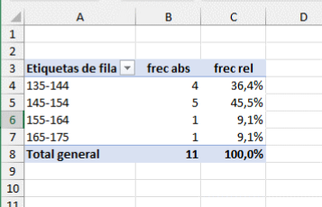
También podemos calcular las frecuencias absolutas de nuestra tabla en Python, de forma bastante sencilla, sin agrupar.
import pandas as pdaltura_cm = [153,135,140,140,175,138,145,154,152,159,154]frecuencias = pd.Series(altura_cm).value_counts()print(frecuencias)
Con un poco más de código podemos hacer la tabla agrupando los valores en clases de amplitud 10, con las frecuencias absolutas y relativas. Es un poco más complicado, tómate tu tiempo para entender cada paso de las instrucciones.
import pandas as pdimport numpy as npaltura_cm = [153,135,140,140,175,138,145,154,152,159,154]serie = pd.Series(altura_cm)# Crear intervalos automáticamente con amplitud 10bins = np.arange(min(altura_cm)//10*10, max(altura_cm)//10*10+20, 10)# Agrupar y contartabla = pd.cut(serie, bins=bins).value_counts(sort=False)# Convertir a DataFrame con acumulados y relativosdf = tabla.to_frame(name='Frecuencia')df['Frecuencia acumulada'] = df['Frecuencia'].cumsum()df['Frecuencia relativa (%)'] = (df['Frecuencia'] / df['Frecuencia'].sum() *100).round(2)df['Acumulada (%)'] = df['Frecuencia relativa (%)'].cumsum()print(df)
🔹 Genera los límites de clase con amplitud 10: - min(altura_cm)//10*10: redondea hacia abajo el mínimo a la decena más cercana. - max(altura_cm)//10*10 + 20: redondea hacia arriba el máximo y añade 10 extra para incluir el último dato. - np.arange(...): crea un array de límites desde el mínimo hasta el máximo, en pasos de 10.
📌 Ejemplo de salida: [130, 140, 150, 160, 170, 180]
tabla = pd.cut(serie, bins=bins).value_counts(sort=False)
🔹 Agrupa los datos en los intervalos definidos: - pd.cut(...): asigna cada dato a un intervalo. - .value_counts(sort=False): cuenta cuántos datos hay en cada intervalo, sin reordenarlos.
df = tabla.to_frame(name='Frecuencia')
🔹 Convierte la serie de frecuencias en un DataFrame con una columna llamada 'Frecuencia'.
🔹 Calcula el porcentaje acumulado, útil para análisis tipo Pareto.
print(df)
🔹 Muestra la tabla final con: - Intervalos - Frecuencia absoluta - Frecuencia acumulada - Frecuencia relativa (%) - Porcentaje acumulado
Como ves en el resultado, a veces se utilizan los símbolos ( y [ para definir los intervalos, tal como se hace en matemáticas.
Intervalo abierto: El símbolo ( se utiliza para denotar un intervalo abierto. El límite correspondiente no está incluuido en el intervalo.
Intervalo cerrado o semiabierto:El símbolo [ se utiliza para denotar un intervalo cerrado o semiabierto. EL límite correspondiente sí está incluido en el intervalo.
Ejemplos:
\((a, b)\) representa todos los números reales mayores que \(a\) y menores que \(b\) (excluye los valores \(a\) y \(b\)).
\([a, b]\) representa todos los números reales mayores o iguales que \(a\) y menores o iguales que \(b\) (incluye \(a\) y \(b\)).
\([a, b)\) representa todos los números reales mayores o iguales que \(a\) y menores que \(b\) (incluye \(a\), pero excluye \(b\))
\((a, b]\) representa todos los números reales mayores que \(a\) y menores o iguales que \(b\) (excluye \(a\), pero incluye \(b\)). :::
Si comparamos los dos métodos que hemos utilizado para construir la tabla de frecuencias, vemos que:
en Excel los pasos que hemos dado no están registrados y a la vista, y, por lo tanto, no son fácilmente revisables
en Python, todos los pasos y opciones que hemos utilizado están a la vista en el código del script
Si otra persona quisiera modificar la tabla, le sería fácil editar el código y relanzar el script, mientras que en Excel no sería fácil asegurarse de todos y cada uno de los pasos y clicks de ratón que hemos dado para construir y formatear la tabla.
Es el caso, por ejemplo, de que enviásemos la tabla a otra persona y ésta tuviese que editarla en nuestra ausencia. En Excel, tendríamos que enviar a esa persona una explicación con las instrucciones oportunas; en cambio, en Python, una vez que se comprende el código, no hacen falta más explicaciones adicionales. Incluso sin una comprensión total del código, se podría duplicar exactamente la tabla copiando y ejecutando el código.
Esta es una de las principales razones de la conveniencia del aprendizaje de Python incluso para las actividades más sencillas.
7.4 Ejercicio propuesto
En la tabla de frecuencias anterior, calcular frecuencia absoluta acumulada y frecuencia relativa acumulada en Excel, e incluirlas en la tabla como dos columnas adicionales. La frecuencia relativa acumulada nos permitirá crear diagramas de Pareto, muy útiles en los procesos de mejora de calidad.
7.5 Diagrama de barras
Cuando nuestra variable es discreta, podemos representar las frecuencias de cada valor de forma gráfica utilizando un diagrama de barras. Este diagrama utiliza barras rectangulares para representar la frecuencia de cada categoría.
Este gráfico es muy utilizado para representar, por ejemplo, resultados de encuestas, como el número de votos que han obtenido los diferentes partidos políticos en unas elecciones, o tablas discretas, como los kilos fabricados por meses en una fábrica.
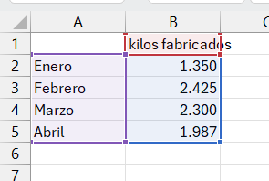
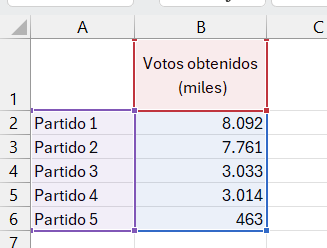
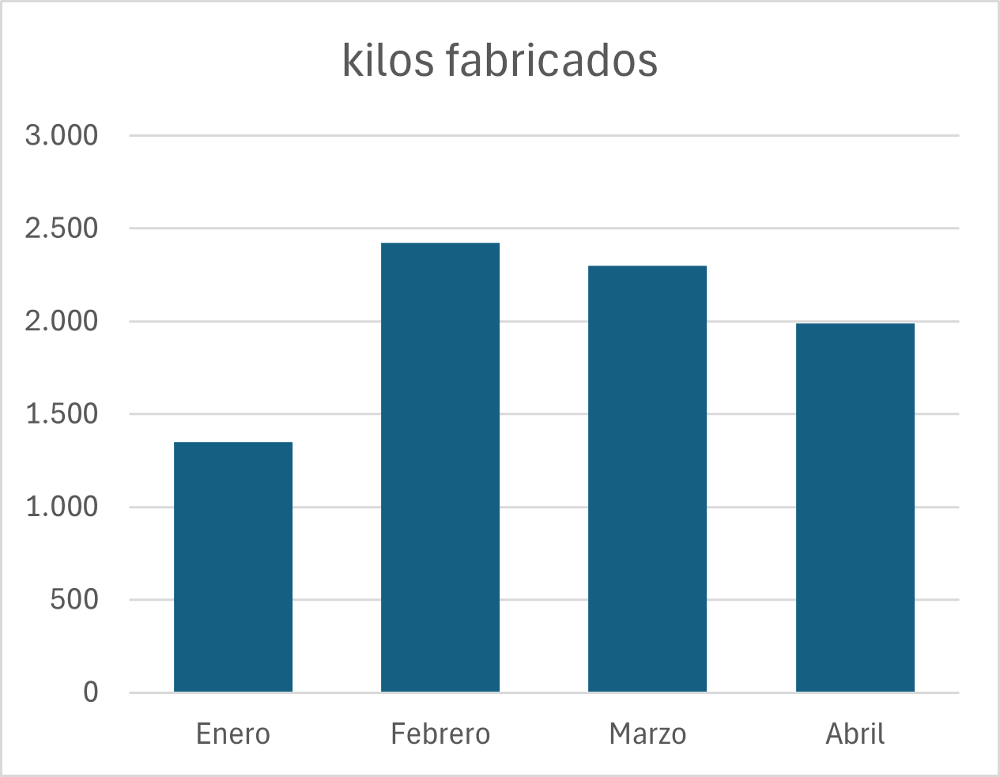
Ejemplos de diagramas de barras
7.6 Histograma
Para visualizar las variables continuas se utiliza el histograma, que es un diagrama que utiliza las barras rectangulares para hacer un gráfico de la distribución de valores continuos, previamente agrupados en intervalos (bins en inglés), tal como se ha hecho en la tabla de frecuencias.
Componentes de un histograma
Eje horizontal (X): Representa los intervalos de valores de la variable. Cada intervalo abarca un rango específico de valores.
Eje vertical (Y): Muestra la frecuencia o el número de veces que los valores caen dentro de cada intervalo.
Barras: Cada barra en el histograma representa un intervalo. La altura de la barra indica la frecuencia de los valores dentro de ese intervalo.
Cómo interpretar un histograma
Si las barras son altas en un intervalo específico, significa que muchos valores del conjunto de datos caen dentro de ese rango.
Un histograma puede ayudar a identificar patrones, como si los datos están distribuidos de manera simétrica, sesgada, o si hay picos y valles significativos.
Construcción de un histograma en Excel
Usaremos el ejemplo de la altura en cm. de un grupo de alumnos, cuyos datos hemos guardado en el fichero csv aula1.csv.
Podemos utilizar dos métodos para hacer un histograma en Excel
Método 1: histograma directo
Seleccionamos el rango de datos. Podemos hacerlo mediante un click en el encabezado de la columna de la variable altura_cm, en este caso, la columna B.
En la opción de menú Insertar, seleccionamos el icono Seleccionar gráficos de estadística
Seleccionamos Histograma
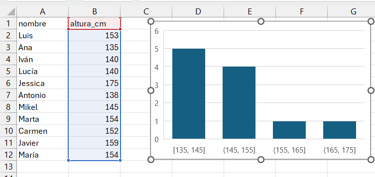
Excel calcula automáticamente la amplitud de los intervalos y el número de columnas; estas opciones pueden modificarse seleccionando con el botón derecho del ratón el elemento a modificar. En este caso, utilizamos estas opciones:
Eliminamos título del gráfico
Modificamos anchura de las barras seleccionando Dar formato a serie de datos, Opciones de serie, Ancho del rango= 50%
Modificamos los intervalos seleccionando el eje X: Dar formato al eje, Opciones de eje, Ancho del rango = 10
La descripción de los intervalos utiliza los mismos símbolos que hemos visto en las tablas de frecuencias de R.
En el momento de escribir este manual, Excel no permite hacer histogramas múltiples ni agrupados por otra variable, por lo que para diseños más complejos, no hay más remedio que recurrir a otras opciones como las tablas dinámicas de Excel o, mejor aún, R.
Método 2: utilizar una tabla dinámica
La tabla dinámica que hemos construido en Excel ha convertido nuestra variable continua, altura_cm, en una tabla de valores discretos, al agrupar los valores en intervalos. En Excel podemos representar las frecuencias absolutas de nuestra tabla gráficamente, insertando un gráfico de barras a partir de la tabla:
Con el cursor dentro de la tabla, seleccionamos la opción de menú Insertar
Insertamos un gráfico de barras
Opcionalmente, aplicamos las siguientes opciones de formato:
Hacemos click sobre uno de los botones del gráfico dinámico con el boton derecho del ratón, y seleccionamos la opción ocultar todos los botones del gráfico.
Eliminamos el título del gráfico
Abrimos el formato de la serie de datos, e introducimos en la opción Ancho del rango el valor \(50\%\) para ensanchar las barras.
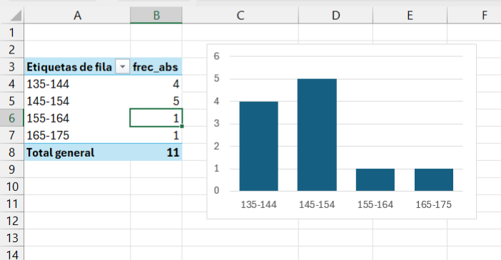
Al utiizar la tabla dinámica para construir el gráfico, Excel utiliza las categorías de la tabla dinámica. Dado que estas categorías (los intervalos que ha formado la tabla dinámica) son discretas, Excel utiliza el resultado de la tabla dinámica para hacer el gráfico con un diagrama de barras. No es posible insertar un histograma a partir de una tabla dinámica.
Análisis de un caso real
El histograma muestra su utilidad cuando representamos la distribución de un conjunto de valores más grande que nuestros once alumnos. Veamos su aplicación a los datos diarios de una fabricación de queso camembert a lo largo de un año.Los datos de esta fabricación están en el fichero camembert.csv.
La tabla de datos tiene esta estructura:
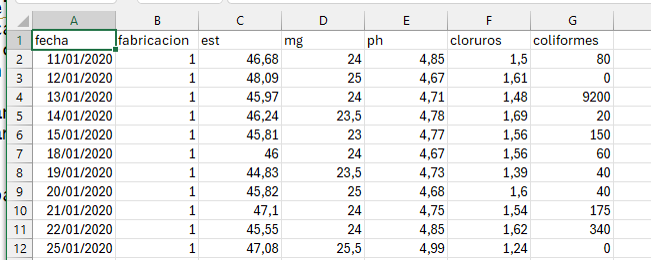
La tabla está formada por 211 casos.
Construcción del histograma con Excel
Método directo
Seleccionamos el rango del extracto seco (columna est) e insertamos el histograma, ajustando el ancho de intervalo a \(1\) en las opciones de gráfico:
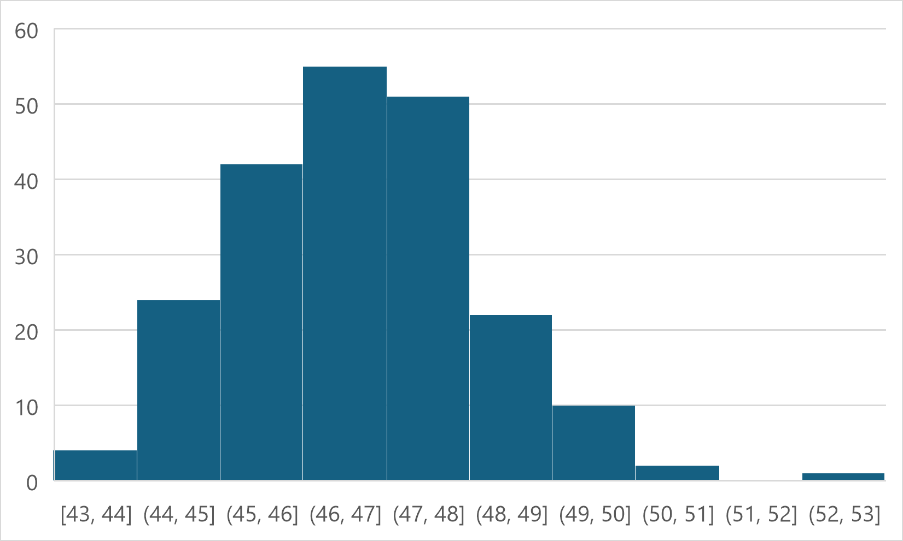
Método 2: mediante una tabla dinámica
Los pasos a seguir son:
Construir la tabla dinámica
Agrupar los datos
Insertar el gráfico a partir de la tabla
Con una agrupación de datos en intervalos de 1, esta es nuestra tabla dinámica:
En la figura siguiente vemos el histograma correspondiente a la tabla anterior, con un intervalo de clase de 1 punto de extracto seco total, y otras dos alternativas si el intervalo de clase fuese de 2 puntos o de de 0,5 puntos.
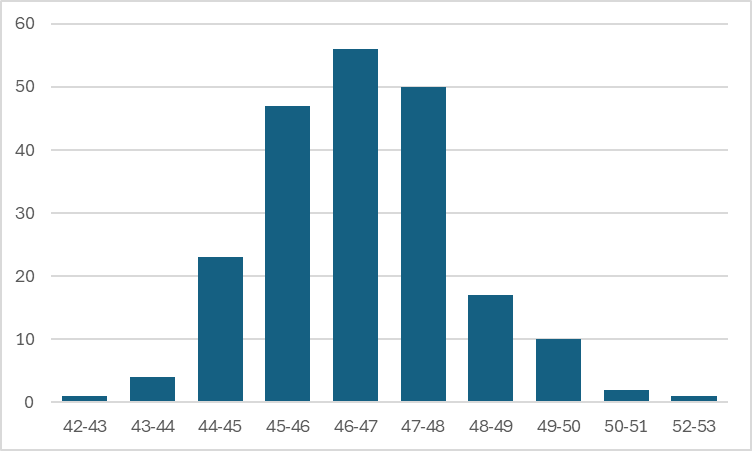
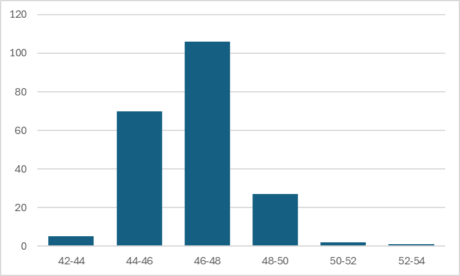
La decisión de cambiar la amplitud del intervalo en un histograma influye en el aspecto del gráfico y es una opción personal; lo mejor es utilizar la que en nuestra opinión refleje mejor el aspecto de la distribución de datos, ni demasiado grande ni demasiado pequeña. En todo caso, debemos ser capaces de interpretar que la distribución de los valores es la misma en los tres casos: hay una mayoría de casos con valores entre 46 y 48, y muy pocos casos con valores muy bajos o muy altos. En este caso, la distribución de los valores es aproximadamente simétrica, y se reparten alrededor de una mayoría de valores centrales.
Creación del histograma en Python
Las funciones de histograma de Python permiten construir el histograma directamente sin necesidad de hacer previamente una tabla de frecuencias (en realidad, la tabla de frecuencias se calcula internamente). Es mucho más sencillo utilizar estas funciones, ya que el código se simplifica mucho.
Como siempre, presentamos la opción básica de R junto con la opción de la función ggplot() de tidyverse, y utilizamos las opciones de personalización de ggplot()para trazar un histograma de aspecto semejante al gráfico básico; en esta ocasión, utilizamos el color de relleno gris.
Vemos que los dos gráficos no son idénticos a pesar de provenir de los mismos datos, porque la construcción de los intervalos subyacente es ligeramente diferente. Esto no debe preocuparnos, porque el aspecto general de la distribución de los datos es el mismo.
En la fase de exploración nos importa más entender estas propiedades de los datos (aspecto, forma de la distribución) que la precisión en la construcción del gráfico. En todo caso, en qqplot()podemos usar infinidad de opciones que nos permiten configurar el gráfico hasta los más mínimos detalles, por lo que esta función es mucho más útil que las funciones básicas para preparar gráficos que vayan destinados a informes o presentaciones. La función básica hist(), por su parte, es más sencilla de usar al principio cuando no tenemos todavía experiencia con ggplot(), y también para una visualización rápida.
Otros ejemplos
En ocasiones, nos encontramos con datos que son asimétricos: hay una mayoría de valores bajos o bien de valores altos. Veamos un caso: los recuentos bacterianos de bacterias coliformes, que tenemos en la última columna a la derecha de nuestra tabla, en la variable ´coliformes´.
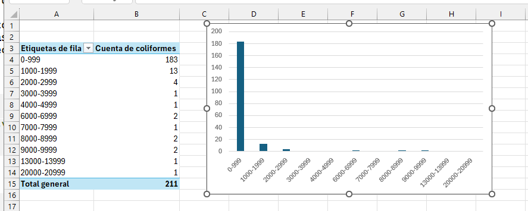
En este caso, vemos que la mayoría de los casos tienen valor cero. Es el caso de los recuentos de bacterias contaminantes, en el que la mayoría de los análisis tienen recuentos cero o muy bajos, y sólo en pocos casos tienen valores altos. Veremos con más detalle cómo tratar estas distribuciones cuando hablemos de las distribuciones de probabilidad, en capítulos posteriores.
En los histogramas de los recuentos bacterianos,utilizamos una opción para aumentar el número de barras que queremos en el histograma: breaks= en la función base, bins= en ggplot():
En casos de distribuciones muy asimétricas, a veces es conveniente aplicar una transformación a los datos, tal como el logaritmo decimal, mediante la función log10(); esto facilita la interpretación del gráfico:
7.7 Gráficos de densidad
Un gráfico de densidad en R es una representación visual suavizada de la distribución de un conjunto de datos. A diferencia de los histogramas, que dividen los datos en intervalos y cuentan las frecuencias, los gráficos de densidad utilizan técnicas estadísticas no paramétricas para estimar la función de densidad de probabilidad.
Un gráfico de densidad, también conocido como density plot, es una representación visual suavizada de la distribución de un conjunto de datos.A diferencia de los histogramas, que dividen los datos en intervalos y cuentan las frecuencias, los gráficos de densidad utilizan técnicas estadísticas no paramétricas para estimar la función de densidad de probabilidad de una variable continua. El gráfico de densidad utiliza suavizamiento para proporcionar una estimación más continua de la distribución de los datos.
Excel no permite la representación de los gráficos de densidad; en R pueden hacerse con la función ggplot()simplemente añadiendo la geometría geom_density()
Podemos representar simultáneamente el histograma y la función de densidad; hay que tener en cuenta que para representar la densidad y el histograma superpuestos, nos vemos obligados a cambiar la escala del eje Y a los valores de densidad en vez de a las frecuencias, de manera que los dos gráficos puedan solaparse sin problemas.
La ventaja de los gráficos de densidad es que como no tenemos que fraccionar los datos en intervalos arbitrarios, no estamos afectados por el efecto visual de la anchura de estos intervalos. También hay otras ventajas desde el punto de vista estadístico, que veremos al hablar de las distribuciones de probabilidad.
La flexibilidad de configuración de los gráficos de qqplot()permite la personalización de los gráficos hasta el último detalle. A continuación vemos un gráfico de densidad agrupado por meses, que nos muestra aparentes diferencias en el extracto seco est según los meses.
7.8 Diagrama de caja o boxplot
Este gráfico fue creado por el estadístico John Tukey en 1977, y es una herramienta fundamental en la exploración de datos. Se basa en un grupo de medidas que se utiliza ampliamente en la descripción de conjuntos de datos, el conjunto de cuartiles. Si dividimos un grupo de datos ordenados en cuatro partes iguales, mediante tres puntos de corte, llamamos primer cuartil o \(Q1\) al valor que se situa en el 25%; segundo cuartil, o \(Q2\), al valor que se sitúa en el centro (50%), y tercer cuartil, o \(Q3\), al punto que se situa en el 75% de los datos. A estos tres valores añadimos el mínimo y el máximo, y tenemos un conjunto de cinco números que nos permiten describir la forma de la distribución de datos con cierta precisión. El segundo cuartil (\(Q2\)), que corresponde al 50% de los datos, se conoce habitualmente como mediana. El valor resultante de restar \(Q3-Q1\) es lo que se conoce como rango intercuartil o \(IQR\), y es una medida de la dispersión de la distribución de datos (mide la amplitud de la distribución).
El diagrama de caja, también conocido como boxplot, es un gráfico que permite resumir las características principales de un conjunto de datos utilizando estos cinco números, tal como se explica a continuación. Sus ventajas son:
Muestra la mediana y los cuartiles (Q1 y Q3) de los datos.
Permite identificar la simetría de la distribución: si la mediana no está en el centro, la distribución no es simétrica.
Permite detectar posibles valores atípicos, representando los valores atípicos (outliers) que están lejos del resto de los datos (un valor es atípico si está más allá de (Q3 + 1.5 IQR) o (Q1 - 1.5 IQR).
La construcción de un diagrama de caja es como sigue:
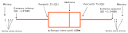
Microsoft Excel no dispone de un diseño de gráficos de caja que sea práctico, por lo que recurriremos siempre a R para realizarlos.
Como casi siempre, hay una función de base que dibuja un boxplot y también una geometría de ggplot()que lo hace: geom_boxplot(), con muchas más opciones de diseño y formato que la opción de base.
df_camembert |> ggplot(aes(x=““, y=est))+ geom_boxplot() + theme_bw() + theme(axis.text.x = element_blank(), # Oculta las etiquetas del eje x axis.ticks.x = element_blank()) # Oculta las marcas del eje x
Un uso muy interesante del boxplot en R consiste en agrupar los boxplot de una variable en funcion de otra. En este caso, agrupamos el extracto seco por meses previa agrupación de la fecha. Esta agrupación puede hacerse tanto en los gráficos básicos de R como en ggplot():
Resumen
El código realiza las siguientes acciones:
Añade una columna mes al dataframe df_camembert, que contiene solo el mes extraído de la columna fecha.
Crea un boxplot básico que muestra la distribución de est por mes.
Utiliza ggplot2 para crear un boxplot más personalizado de est por mes, con etiquetas y un tema minimalista para un diseño limpio.
df_camembert |> mutate (mes = format(fecha, “%m”)) |> ggplot(aes(x = mes, y = est)) + geom_boxplot() + labs(title = “Boxplot de ‘est’ por Meses”, x = “Mes”, y = “Valor de est”) + theme_minimal()
La agrupación de los boxplots por meses nos pone claramente de manifiesto las diferencias en el extracto seco estque ya habíamos visto con los gráficos de densidad. Estas diferencias son más claras en el mes de julio.
Relación entre el boxplot y el histograma
Resulta muy útil comprender visualmente la relación entre el boxplot y el histograma para entender la distribución de los datos. En la gráfica siguiente se representan ambos simultáneamente
df_camembert |> ggplot(aes(x = est)) + geom_histogram(fill = “lightblue”, color = “black”, bins = 20, alpha = 0.7) + geom_boxplot(width = 2, fill = “darkgrey”, alpha = 0.7, position = position_nudge(y = -2)) + labs(title = “Histograma y Boxplot”, y = “Frecuencias”)
df_camembert |> ggplot(aes(x = log10(coliformes+1))) + geom_histogram(fill = “lightblue”, color = “black”, bins = 20, alpha = 0.7) + geom_boxplot(width = 4, fill = “darkgrey”, alpha = 0.7, position = position_nudge(y = -4)) + labs(title = “Histograma y Boxplot”, y = “Frecuencias”)
7.9 Gráficos de dispersión
Un gráfico de dispersión, también conocido como diagrama de dispersión o scatter plot, es una representación gráfica que utiliza puntos para mostrar la relación entre dos variables numéricas. Cada punto en el gráfico representa una observación del conjunto de datos y se coloca en el plano cartesiano de acuerdo con sus valores en las dos variables que se están comparando.
Un gráfico de dispersión se compone mediante puntos:
Cada punto en el gráfico representa una observación.
La posición del punto en el gráfico está determinada por los valores de las dos variables para esa observación.
Los gráficos de dispersión son útiles para identificar varios aspectos de la relación entre las dos variables:
Si los puntos tienden a agruparse a lo largo de una línea recta ascendente, esto indica una correlación positiva (a medida que una variable aumenta, la otra también lo hace).
Si los puntos se agrupan a lo largo de una línea descendente, esto indica una correlación negativa (a medida que una variable aumenta, la otra disminuye).
Si los puntos forman una curva en lugar de una línea recta, esto sugiere una relación no lineal entre las variables.
La dispersión de los puntos puede indicar la variabilidad de los datos. Puntos que están muy lejos del patrón general pueden ser valores atípicos.
Como siempre, vemos el gráfico de dispersión en Excel y a continuación en R. Utilizamos la tabla de datos camembert.csv y representamos las variables esty mg.
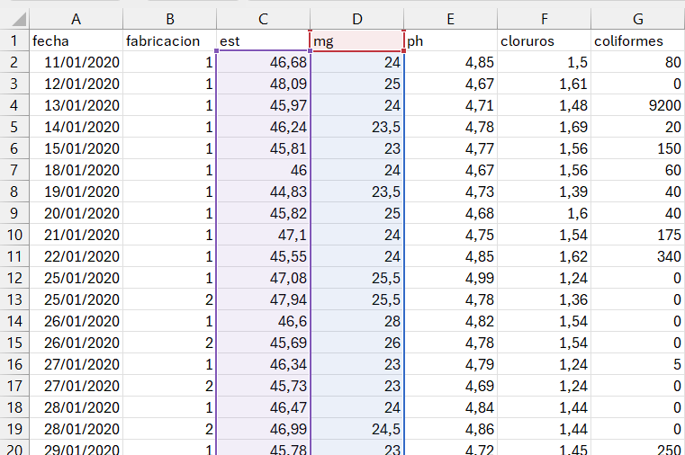
(a) Tabla de origen mostrando una parte de los datos seleccionados
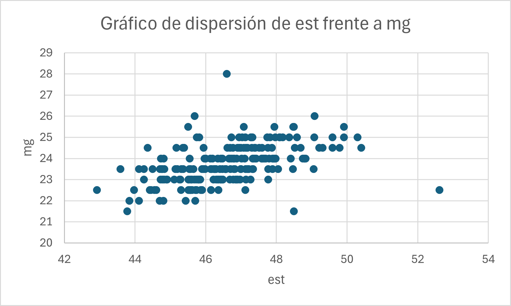
Gráfico de dispersión
Figura 7.1: Gráfico de dispersión en Excel
A continuación, el código R para realizar el gráfico de dispersión, con la función básica y con ggplot().
#| label: fig-grafdisp #| fig-cap: “Ejemplos de gráfico de dispersión” #| fig-subcap: #| - “Gráfico de dispersion básico de R” #| - “Gráfico de dispersion utilizando ggplot()” #| layout-ncol: 2 #| plot(df_camembert\(est, df_camembert\)mg)
Lo esperable en nuestros datos es que el valor de est y el de mg estén asociados, y a valores altos de la primera variable correspondan valores altos de la segunda (para el mismo producto y sin cambios de tecnología). Sin embargo, algunos valores parecen no encajar en este modelo; es el caso de un valor de estpor encima de 52% con un valor de mginferior a 23%, o el caso de un valor de mg en torno al 28% con un valor de est por debajo de 47%. Debemos revisar estos valores aparentemente anormales para verificar si ha habido un error en la toma de muestras o un error analítico. En fábricas con productos diferentes cuyos resultados analíticos se recogen en una tabla de datos común, a veces puede haber errores en la introducción de los códigos de producto, de forma que la toma de muestras y los análisis pueden ser correctos, pero estar mal asignados al guardar los datos.
Como vemos, los gráficos de dispersión son una herramienta esencial en el análisis de datos exploratorio, ya que permiten visualizar relaciones y patrones en los datos, identificar correlaciones y detectar posibles anomalías. Esta información es crucial para realizar análisis estadísticos más profundos y tomar decisiones basadas en datos.
7.10 Gráficos de series temporales
Hasta ahora hemos utilizado gráficos y tablas que describen la estructura y forma de una variable, o las relaciones entre dos variables. Hay otros gráficos que tienen en cuenta la forma en la que esos datos cambian con el tiempo. En este caso, será necesario que hayamos recogido en una variable de nuestra tabla los intervalos de tiempo en los que se han producido nuestros valores.
7.11 Ejemplos de series temporales
¿Se te ocurren algunos ejemplos de series temporales?
7.12 Algunos ejemplos
proceso de llenado de envases de queso crema: se llena una tarrina cada 15 segundos. Nuestros datos deben recoger el tiempo y el peso.
nuestro fichero de fabricación de queso camembert recoge los valores analíticos medios diarios del producto fabricado.
Una fábrica recoge leche diariamente y analiza cada día la composición de la leche que entra en la fábrica.
En un gráfico de series temporales,
el eje horizontal (X) representa el tiempo. Los puntos de tiempo pueden ser minutos, horas, días, meses, años, etc.
el eje vertical (Y) representa los valores de la variable que se está estudiando. Estos valores pueden ser medidas como temperatura, ventas, precios, etc.
cada valor individual corresponde a un punto
los valores se conectan mediante una línea que conecta los puntos de datos, mostrando cómo cambian los valores de la variable a lo largo del tiempo.
normalmente, en un gráfico de series temporales no suelen representarse los puntos individuales para facilitar la legibilidad del gráfico.
En nuestro conjunto de datos de fabricación de queso camembert, la primera columna de la tabla recoge la variable fecha, lo que nos permite ordenar nuestros valores en el tiempo.
Cuando representamos valores en el tiempo, nunca usaremos el diagrama de barras, sino el gráfico de líneas.
Cómo hacer los gráficos de series temporales en Excel y en R
Para hacer el gráfico en Excel, seleccionamos la columna este insertamos un gráfico de líneas. A continuación, con el cursor sobre el gráfico, pulsamos el boton derecho y seleccionamos la opción Seleccionar datos. Una vez abierto el cuadro de opciones, editamos las etiquetas del eje X y seleccionamos el rango de la variable fecha desde la fila 2 hasta la última.Aceptamos, y a continuación editamos el formato del eje Y para sustituir el valor mínimo de \(0\) por \(42\), que es el valor que queremos como mínimo para nuestro gráfico.
Tabla y gráfico de series
A continuación, los gráficos en R, como siempre con la opción de gráficos base y con ggplot(). R formatea automáticamente el rango del eje Y y no tenemos que hacer ninguna corrección de formato.
#| label: fig-graftemp #| fig-cap: “Ejemplos de gráfico de series temporales” #| fig-subcap: #| - “Gráfico de series temporales básico de R” #| - “Gráfico de series temporales utilizando ggplot()” #| layout-ncol: 2
Los gráficos de series temporales son útiles para:
Identificar Tendencias:
Una tendencia es una dirección general en la que los datos se mueven a lo largo del tiempo. Puede ser creciente, decreciente o constante.
Detección de Estacionalidad:
La estacionalidad se refiere a patrones que se repiten en intervalos regulares de tiempo, como las ventas de productos estacionales.
Identificar Ciclos:
Los ciclos son fluctuaciones que ocurren en intervalos no regulares y pueden deberse a factores económicos o de otra índole.
Detección de Anomalías:
Los picos y caídas repentinas pueden indicar eventos inusuales o errores en los datos.
Los gráficos de series temporales son cruciales en diversas áreas:
Economía y Finanzas:
Seguimiento de precios de acciones, tasas de interés y otros indicadores económicos.
Ciencia y Tecnología:
Monitoreo de variables ambientales, datos meteorológicos y medidas científicas.
Negocios:
Análisis de ventas, demanda de productos y desempeño empresarial a lo largo del tiempo.
Los gráficos de series temporales proporcionan una visión clara y concisa de cómo cambian los datos a lo largo del tiempo. Esta visualización es fundamental para el análisis predictivo, la toma de decisiones y la identificación de patrones y anomalías en los datos.